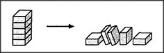
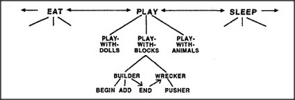

Most children not only like to build, they also like to knock things down. So let's imagine another agent called Wrecker, whose specialty is knocking-down. Our child loves to hear the complicated noises and watch so many things move all at once.
Suppose Wrecker gets aroused, but there's nothing in sight to smash. Then Wrecker will have to get some help — by putting Builder to work, for example. But what if, at some later time, Wrecker considers the tower to be high enough to smash, while Builder wants to make it taller still? Who could settle that dispute?
The simplest policy would be to leave that decision to Wrecker, who was responsible for activating Builder in the first place. But in a more realistic picture of a child's mind, such choices would depend on many other agencies. For example, let's assume that both Builder and Wrecker were originally activated by a higher-level agent, Play-with-Blocks. Then, a conflict might arise if Builder and Wrecker disagree about whether the tower is high enough.
What aroused Play-with-Blocks in the first place? Perhaps some even higher-level agent, Play, was active first. Then, inside Play, the agent Play-with-Blocks achieved control, in spite of two competitors, Play-with-Dolls and Play-with-Animals. But even Play itself, their mutual superior-in-chief, must have had to compete with other higher-level agencies like Eat and Sleep. For, after all, a child's play is not an isolated thing but always happens in the context of other real-life concerns. Whatever we may choose to do, there are always other things we'd also like to do.
In several sections of this book, I will assume that conflicts between agents tend to migrate upward to higher levels. For example, any prolonged conflict between Builder and Wrecker will tend to weaken their mutual superior, Play-with-Blocks. In turn, this will reduce Play-with-Blocks' ability to suppress its rivals, Play-with-Dolls and Play-with-Animals. Next, if that conflict isn't settled soon, it will weaken the agent Play at the next-higher level. Then Eat or Sleep might seize control.